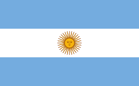
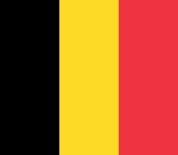
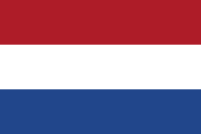
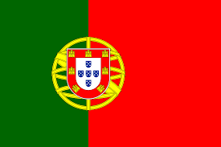

QUAL É A SUA APOSTA PARA A SELEÇÃO CAMPEÃO DA COPA DE 2022
Postado em 20 de março de 2022
Abaixo a lista de todas as equipe que poderam concorrer ao título de capeã do Mundo de 2022, selecione a qual você acredita que será a vencedora desta copa, e concorra a prémio:
Obs: Não esqueça de preencher seu danos no após escolher a seleção.
Equipes:
Alemanha
Arábia Saudita
Argentina 
Bélgica 
Brasil
Camarões
Canadá
Catar
Coreia do Sul
Croácia
Dinamarca
Emirados Árabes Unidos
Equador
Escócia
Estados Unidos
França
Gana
Inglaterra
Irã
Japão
Marrocos
México
País de Gales
Países Baixos 
Peru
Polónia
Portugal 
Senegal
Sérvia
Suíça
Tunísia
Ucrânia
Uruguai
Nome:
Sobrenome:
Seu e-mail:
Postagens recentes
O mascote da Copa do Mundo do Qatar se chama La'eeb.